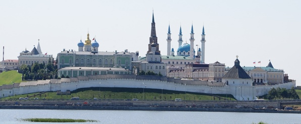
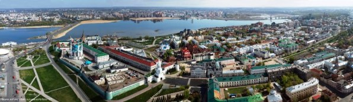

О Казани

Казань – один из крупнейших городов России, жемчужина Поволжья,
столица Республики Татарстан, третья столица России, город с тысячелетней историей.
Люди разных национальностей и вероисповеданий жили в согласии на
протяжении сотен лет.
и всегда извлекать выгоду из культурного разнообразия.
Независимо от ваших интересов, Казани есть что вам предложить:
Достопримечательности, традиционная татарстанская и русская кухня,
Мечети и церкви, музеи, выставки и многое другое!
Знакомство с Казанью:

-
•Одно из самых быстрорастущих туристических направлений
-
• российская спортивная столица
-
• Расположен в самом безопасном регионе России
-
• Один из самых высоких уровней жизни в России.
-
• Население: 1,2 миллиона человек
-
• Имеет более 100 этнических групп.
-
•Город исследования: более 210 000 студентов, более 40
университетов
-
• Более 50 музеев, театров, концертных залов
Казань – научный город. Среди выдающихся ученых и учёных, работавших здесь, — Лобачевский, Бутреров, Завойский,
Глушко, Четаев и так далее.
Казань — город с богатым культурным наследием, здесь расположено множество музеев мирового уровня, девять
театров и десятки библиотек.
Казань – город спорта и одна из самых развитых спортивных отраслей среди городов России. В 2013 году прошла
XXVII Всемирная летняя универсиада, в 2015 году — чемпионат мира по водным видам спорта, в 2018 году — чемпионат
мира.
Казань – один из самых популярных туристических городов России.
Казань – гостеприимный город

{kind=link}
{kind=link}
.jpg/62fae6dd-8782-4ab6-8972-317b40ce59cf?t=1536221152790){kind=link}